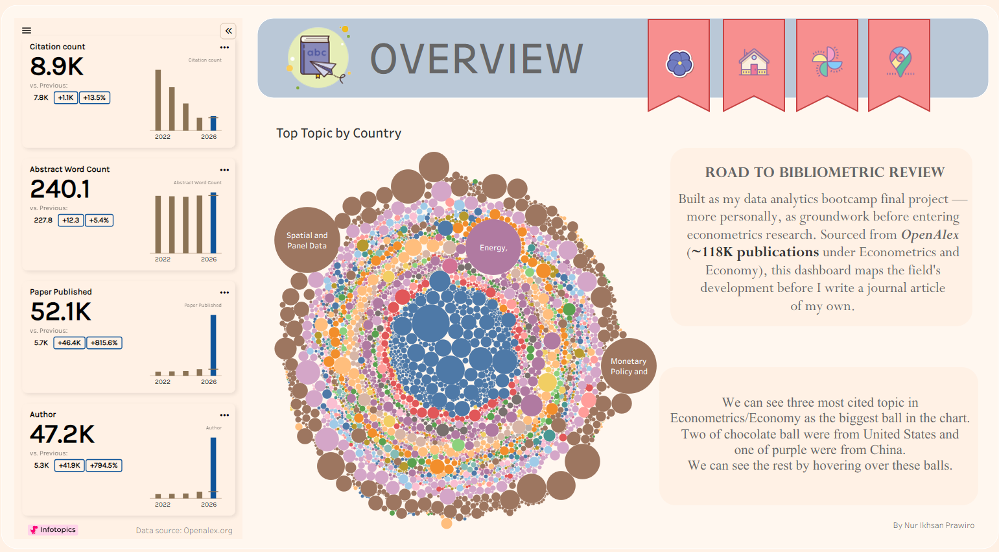
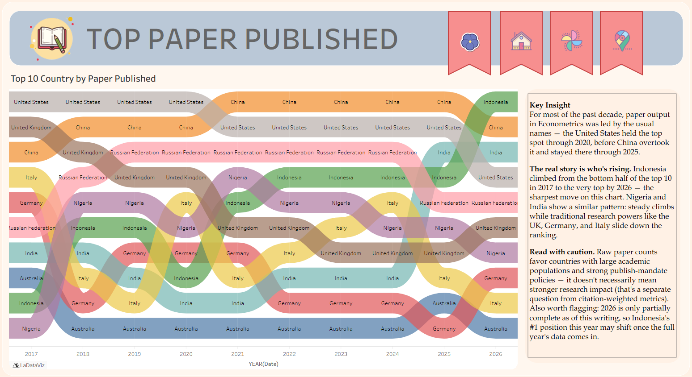
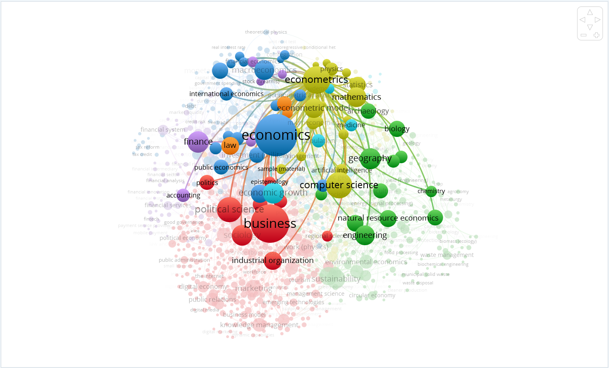
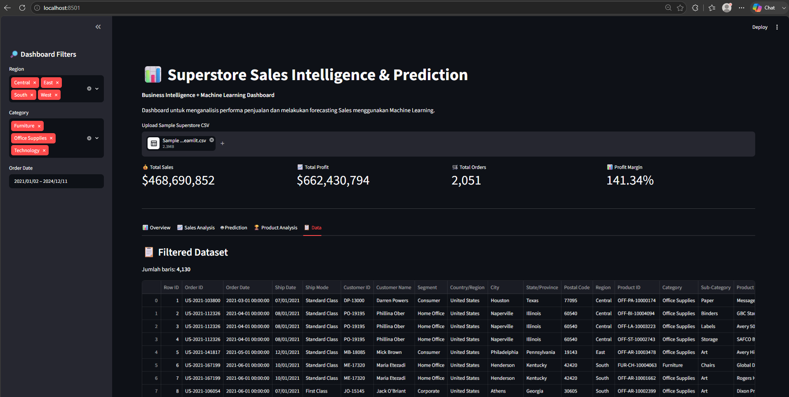

Bibliometric Review — Econometrics Research
Dashboard Tableau yang memetakan ~118 ribu publikasi bidang ekonometrika dan ekonomi dari OpenAlex (2017–2026), sebagai proyek akhir bootcamp sekaligus dasar sebelum menulis artikel jurnal.
Data Analyst · Bandung, Indonesia
Berlatar belakang ekonomi & keuangan, kini bekerja dengan data — mengubah angka mentah jadi keputusan yang jelas lewat Python, SQL, dan visualisasi.
Saya memulai karier di bidang protokol dan konsuler di KBRI Paris selama kurang lebih empat tahun, sebelum memutuskan bertransisi ke dunia data. Setelah menyelesaikan bootcamp data analytics di Dibimbing.id, saya kini membangun kemampuan di Python, SQL, Power BI, dan Tableau — dengan minat khusus pada analisis ekonometrika, data panel, dan visualisasi yang jujur pada datanya.

Dashboard Tableau yang memetakan ~118 ribu publikasi bidang ekonometrika dan ekonomi dari OpenAlex (2017–2026), sebagai proyek akhir bootcamp sekaligus dasar sebelum menulis artikel jurnal.

Visualisasi ribbon chart yang menunjukkan pergeseran peringkat negara berdasarkan jumlah paper yang diterbitkan dari tahun ke tahun, lengkap dengan catatan analitis.

Analisis jaringan kata kunci menggunakan VOSviewer untuk melihat keterkaitan antar bidang ilmu di sekitar topik ekonometrika dan ekonomi.

Dashboard business intelligence menggunakan streamlit.